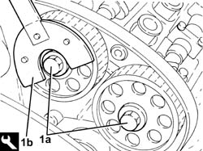
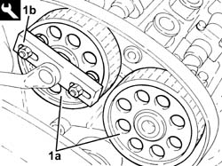

1032B54 toothed driven pulley left-hand head - r + r
- Path
- Procedures > 10 ENGINE > 1032 TIMING SYSTEM > 1032B belt timing system > 1032B54 toothed driven pulley left-hand head - r + r
- Kind
- repair procedure (removal / refitting; the operation number is the code)
- Applies to
- engines: 3.2 V6; all production periods
- Interactive page
- https://sloeber94.github.io/elrnDB-a147/en/#/3024960
Applies to: engines: 3.2 V6; all production periods
 Removing
Removing
 Refitting
RefittingPosition the vehicle on the ramp.
Proceed with removal 4450B04 right front wheel r r .
Proceed with removal 7055B64 Engine compartment DUST shield in front wheel arch (one), left or right - R.R. .
Proceed with removal 1092G10 single engine belt r r .
Proceed with removal 1092A10 Crankshaft services PULLEY - R.R. .
Proceed with removal 1032D12 timing system protective cover(s) - r + r .
Proceed with removal 1016A42 left hand cylinder head ignition coil cover - r+r .
Proceed with removal 5510C16 left hand cylinder head ignition coil - r+r .
Proceed with removal 1016A30 left cam cover - r + r and replace gasket .
Proceed with removal 1072B50 sleeves connecting air capacity box to inlet manifold is - r+r .
Proceed with removal 5510C18 right hand cylinder head ignition coil - r+r .
Proceed with removal 1016A34 right-hand cam cover - r + r and replace gasket .
Proceed with removal 1032B10 toothed timing belt - r + r for timing adjustment or replacement .
1. Undo the bolts (1a) fixing the driven pullies using the tool (1b) for counter-torque.
 | Name | Country |
|---|---|---|
1b | Counter-torque | 1.822.146.000 |

Applies to: engines: 3.2 V6; all production periods
1. Remove the driven pullies (1a) using the tool (1b).
| Name | Country |
|---|---|---|
1b | Extractor | 1.860.954.001 |

Applies to: engines: 3.2 V6; all production periods
Refitting
RemovingPlace the driven toothed pullies back in their housings and secure them without tightening the bolts.
Proceed with refitting 1032B10 toothed timing belt - r + r for timing adjustment or replacement .
Proceed with refitting 1016A34 right-hand cam cover - r + r and replace gasket .
Proceed with refitting 5510C18 right hand cylinder head ignition coil - r+r .
Proceed with refitting 1072B50 sleeves connecting air capacity box to inlet manifold is - r+r .
Proceed with refitting 1016A30 left cam cover - r + r and replace gasket .
Proceed with refitting 5510C16 left hand cylinder head ignition coil - r+r .
Proceed with refitting 1016A42 left hand cylinder head ignition coil cover - r+r .
Proceed with refitting 1032D12 timing system protective cover(s) - r + r .
Proceed with refitting 1092A10 Crankshaft services PULLEY - R.R. .
Proceed with refitting 1092G10 single engine belt r r .
Proceed with refitting 7055B64 Engine compartment DUST shield in front wheel arch (one), left or right - R.R. .
Proceed with refitting 4450B04 right front wheel r r .
Remove the car from the ramps.
Topics linked from this page (12)
- 1016A30 left cam cover - r + r and replace gasket
- 1016A34 right-hand cam cover - r + r and replace gasket
- 1016A42 left hand cylinder head ignition coil cover - r+r
- 1032B10 toothed timing belt - r + r for timing adjustment or replacement
- 1032D12 timing system protective cover(s) - r + r
- 1072B50 sleeves connecting air capacity box to inlet manifold is - r+r
- 1092A10 Crankshaft services PULLEY - R.R.
- 1092G10 single engine belt r r
- 4450B04 right front wheel r r
- 5510C16 left hand cylinder head ignition coil - r+r
- 5510C18 right hand cylinder head ignition coil - r+r
- 7055B64 Engine compartment DUST shield in front wheel arch (one), left or right - R.R.